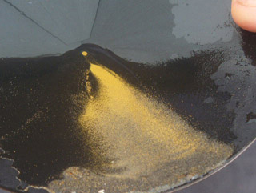

iCON Gold Recovery Corporation
De concentration gravimétrique amélioré pour
à petite échelle et les mineurs artisanaux
Pas de mercure - Pas de cyanure

Concentrateurs iCON sont utilisés pour:
|
|
Quel est iCON?
iCON est une famille de minéraux la transformation des produits spécifiquement conçus pour récupérer l'or fin. iCON a été conçu par les ingénieurs à concentrateurs Falcon et utilise les mêmes technologies brevetées utilisées dans les plus grandes mines du monde.
Le cœur de la famille icône est l'icône de renommée mondiale i150 Concentrateur.
iCON utilise la classification et à la gravité accrue dans ses concentrateurs centrifuges pour s'assurer que vous récupérez le plus d'or possible.
iCON est soutenu par les gouvernements du monde entier en raison de sa capacité à récupérer l'or sans l'utilisation du mercure, du cyanure et d'autres produits chimiques toxiques.
iCON a été conçu pour l'Organisation des Nations Unies du projet mondial sur le mercure d'apporter des techniques professionnelles de petits mineurs à travers le monde.
iCON utilise la même technologie éprouvée que la marque Falcon de produits miniers professionnel: il a été conçu par les ingénieurs de Falcon et est maintenant un produit de iCON Gold Corp récupération Notre histoire et la responsabilité environnementale sont abordés sur notre site web.
Les caractéristiques qui font l'idéal pour les applications iCON Concentrateur à petite échelle sont:
|
|
Le iCON Concentrateur ligne de produits
iCON Gold Recovery Corp. propose une large gamme de plantes récupération de l'or et vend des composants individuellement. Notre gamme de produits comprend:
Concentrateurs, pompes, les écrans et les plantes |
|
|
iCON iPump 3.0 - Bientôt |
Monté sur remorque - Bientôt Usine iCON IGR 1000 - Double i150 usine d'épuration pour l'argile |
Commentaires généraux sur le traitement des minéraux
 Tout au long de traitement de l'or l'histoire a été marquée par l'inefficacité et la contamination. Des millions de dollars d'or fin ont été jetés dans les queues ou "arrosé le ruisseau" en raison du traitement inadéquat.
Tout au long de traitement de l'or l'histoire a été marquée par l'inefficacité et la contamination. Des millions de dollars d'or fin ont été jetés dans les queues ou "arrosé le ruisseau" en raison du traitement inadéquat.
D'autres opérations ont depuis longtemps mis la santé des travailleurs, et de notre planète en danger avec l'utilisation du mercure, du cyanure et d'autres produits chimiques dangereux.
La technologie iCON répond avec succès à la fois des questions, faire en sorte que le plus fort pourcentage de l'or est récupéré et pas de produits chimiques dangereux sont nécessaires.
Le facteur le plus important dans la transformation des minéraux est la classification, la taille relative de l'or, vous êtes le traitement doit être connue. traitement des minerais est coûteuse et longue.
Traitement des matériaux grande qui est connu pour avoir aucune valeur, les coûts de temps et d'argent. Avec la classification, temps, énergie et argent ne sera pas gaspillé le traitement des matériaux en excès qui est connu pour avoir aucune valeur.
Par exemple, si vous savez que votre plus grand or est 0,5 mm alors il n'y a aucune raison de mettre 10mm matériel dans votre processus. En outre, le flux important aura une incidence sur l'efficacité de tout processus. Le matériel sera grand obstacle à la récupération des matériaux plus fins.
Par exemple, un mineur a amélioré son recouvrement de 40% à 70% seulement par le dépistage son fil de 8 mm à 2 mm. Pas d'or a été perdu, parce que son plus grand or a été d'environ 0,5 mm.
 La méthode iCON permettra d'améliorer votre processus de dépistage par votre flux à la bonne taille.
La méthode iCON permettra d'améliorer votre processus de dépistage par votre flux à la bonne taille.
Cela permettra de réduire le volume d'aliments et d'augmenter le pourcentage d'or que vous récupérez.
iCON Récupération de l'or utilise un processus de l'étape 2, la classification et la concentration.
Votre alimentation sera projeté à 2 mm (ou moins en fonction de vos résultats) avant le traitement dans le concentrateur. Tout matériel grand que l'écran passera au-dessus du piège pépite. Cela vous donnera la confiance des utilisateurs qu'ils sont la collecte de l'or BIG tout en minimisant la charge vers le concentrateur et de maximiser son efficacité.